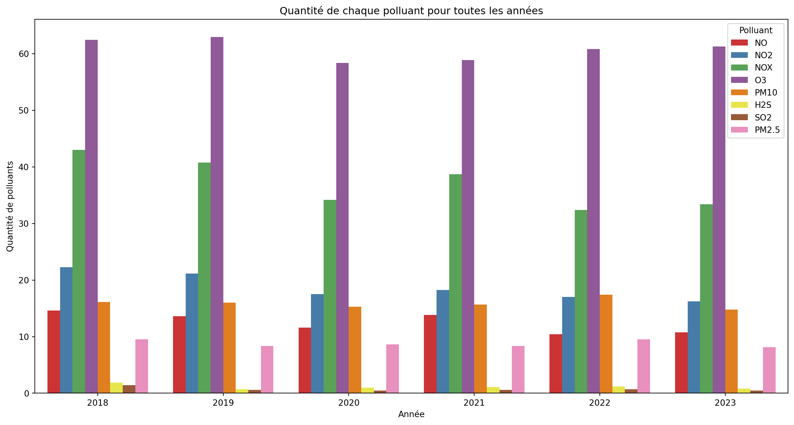
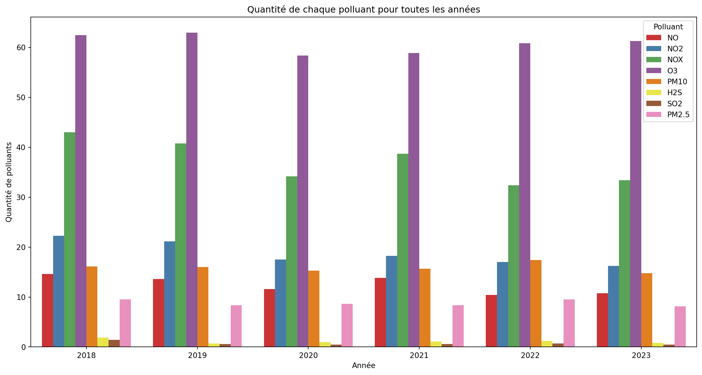
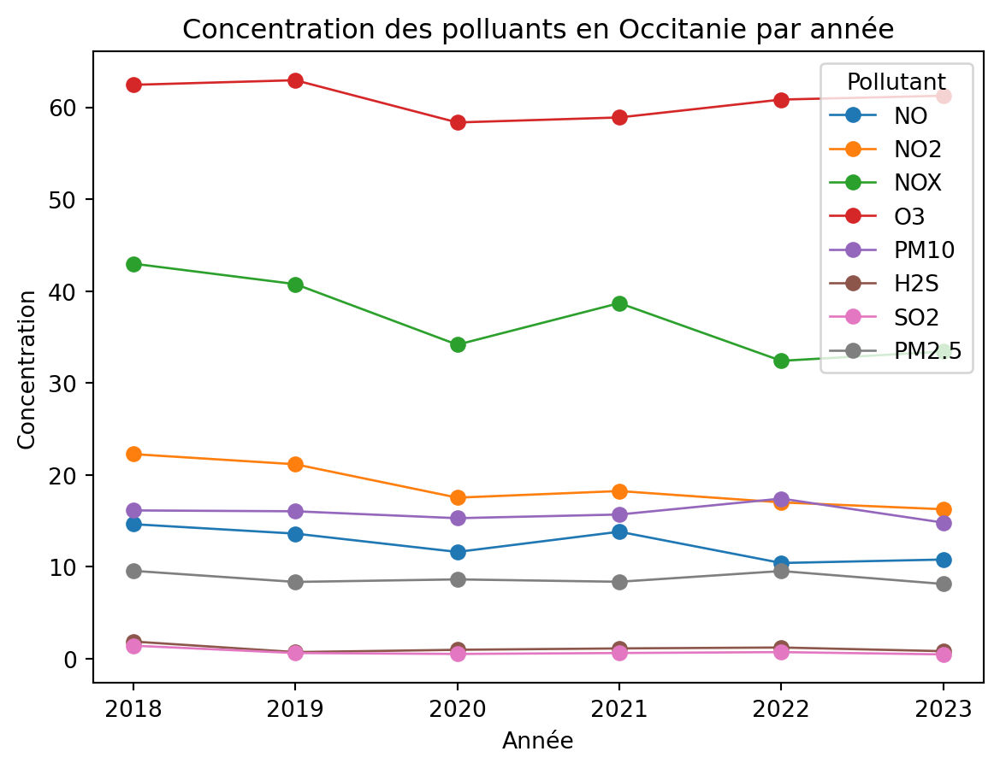
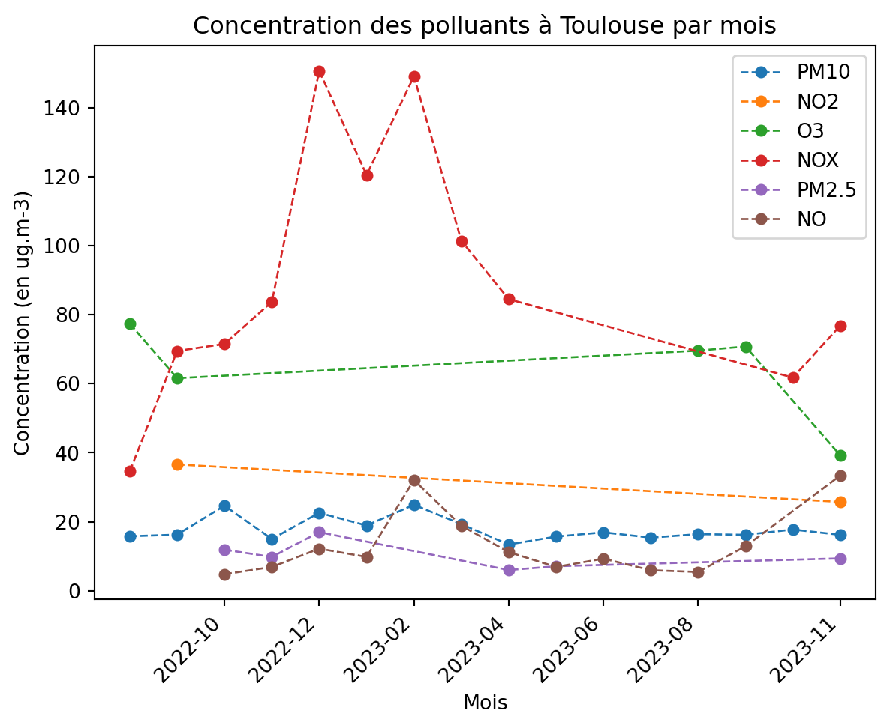

/tmp/ipykernel_2141/1489887017.py:32: FutureWarning:
The `ci` parameter is deprecated. Use `errorbar=None` for the same effect.
sns.barplot(x='annee', y='valeur', hue='nom_poll', data=df_polluants, palette='Set1', ci=None)
Le graphique ci-dessous affiche la concentration (?) de polluants en micro-gramme en Occitanie sur les 5 dernières années. On remarque une forte concentration en O3 et en NOX chaque année.
/tmp/ipykernel_2141/1489887017.py:32: FutureWarning:
The `ci` parameter is deprecated. Use `errorbar=None` for the same effect.
sns.barplot(x='annee', y='valeur', hue='nom_poll', data=df_polluants, palette='Set1', ci=None)
Le graphique ce-dessous présente une autre visualisation des mêmes données qui nous permet de voir l’évolution dans le temps de la concentration (s’il y en a une).

# %%
import requests
from datetime import datetime
import matplotlib.pyplot as plt
from collections import defaultdict
def obtenir_donnees_toulouse():
url = "https://services9.arcgis.com/7Sr9Ek9c1QTKmbwr/arcgis/rest/services/mesures_occitanie_mensuelle_poll_princ/FeatureServer/0/query"
# Paramètres de la requête pour récupérer toutes les données
params_toutes_donnees = {
'outFields': '*',
'where': '1=1', # Récupérer toutes les données
'f': 'geojson'
}
# Effectuer la requête pour récupérer toutes les données
response_toutes_donnees = requests.get(url, params=params_toutes_donnees)
# Vérifier si la requête a réussi (code de statut 200)
if response_toutes_donnees.status_code == 200:
# Récupérer les données JSON
data_toutes_donnees = response_toutes_donnees.json()
# Filtrer les données pour Toulouse
donnees_toulouse = [feature for feature in data_toutes_donnees['features'] if feature['properties']['nom_com'] == 'TOULOUSE']
# Préparer les données pour le graphique
polluants_par_mois = defaultdict(list)
if donnees_toulouse:
for feature in donnees_toulouse:
properties = feature['properties']
polluant = properties['nom_poll']
concentration = properties['valeur']
date_debut_timestamp = properties['date_debut']
# Convertir le timestamp en date et extraire le mois
mois_date_debut = datetime.utcfromtimestamp(date_debut_timestamp / 1000).strftime('%Y-%m')
polluants_par_mois[polluant].append((mois_date_debut, concentration))
# Trier les données par mois
for polluant, data in polluants_par_mois.items():
data.sort(key=lambda x: datetime.strptime(x[0], '%Y-%m'))
# Calculer la moyenne des concentrations pour chaque mois
moyennes_par_mois = defaultdict(float)
compteur_par_mois = defaultdict(int)
for mois, concentration in data:
if concentration is not None: # Vérifier si la concentration n'est pas None
moyennes_par_mois[mois] += concentration
compteur_par_mois[mois] += 1
for mois in moyennes_par_mois:
if compteur_par_mois[mois] > 0:
moyennes_par_mois[mois] /= compteur_par_mois[mois]
polluants_par_mois[polluant] = list(moyennes_par_mois.items())
# Créer le graphique avec des points plus petits et des lignes en pointillé
for polluant, data in polluants_par_mois.items():
mois, concentrations = zip(*data)
plt.plot(mois, concentrations, marker='o', markersize=5, linestyle='--', linewidth=1, label=polluant)
plt.xlabel('Mois')
plt.ylabel('Concentration (en ug.m-3)')
plt.title('Concentration des polluants à Toulouse par mois')
plt.xticks(rotation=45, ha='right') # Pour faire pivoter les noms des mois
# Afficher une étiquette sur trois mois
plt.xticks(mois[::2], mois[::2])
plt.legend(loc='upper right')
# Afficher le graphique
plt.show()
else:
print("Aucune donnée trouvée pour Toulouse.")
else:
print(f"La requête a échoué avec le code d'erreur {response_toutes_donnees.status_code}")
# Exécute la fonction pour obtenir les données et afficher le graphique
obtenir_donnees_toulouse()
# %%